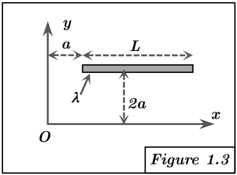

Solution Figure 1.3 : Tige parallèle à OX, décalée en X et Y

FIGURE 3 - Tige parallèle à OX, décalée en X et Y
Méthodes requises : Calcul direct et Théorème de Huygens.
Concepts Clés :
- Décalage : Le déplacement de la tige par rapport à l'origine affecte les coordonnées $(x, y, z)$ utilisées dans le calcul direct (limites d'intégration et valeurs des coordonnées) et le vecteur position du centre de masse $\vec{OG}$ utilisé dans le théorème de Huygens.
- Plan de symétrie : Le plan $z = 0$ reste un plan de symétrie matérielle (la tige est contenue dedans), donc $E = I_{xz} = 0$ et $F = I_{yz} = 0$. Cependant, le plan $x = 0$ n'est plus un plan de symétrie pour la tige décalée, donc $D = I_{xy}$ peut être non nul.
- Théorème de Huygens : Rappel : $[I_O] = [I_G] + [I_{O/G}]$.
Géométrie et Paramétrisation :
- Segment parallèle à OX, positionné en $y = 2a, z = 0$.
- Il s'étend de $x = a$ à $x = a + L$.
- Point P :
$$ P = \begin{pmatrix} x \\ 2a \\ 0 \end{pmatrix}, \quad \text{avec } x \in [a, a + L] $$
- Élément de longueur et de masse : $dl = dx$, $dm = \lambda dx$.
- Masse totale : $M = \lambda L$.
- Centre de Masse (G) : Milieu du segment en x (soit $a + L/2$), et $y = 2a, z = 0$.
$$ G = \begin{pmatrix} a + L/2 \\ 2a \\ 0 \end{pmatrix} $$
Méthode 1 : Calcul direct
Calcul de A :
$$ A = \int_{a}^{a+L} (y^2 + z^2) dm = \int_{a}^{a+L} ((2a)^2 + 0^2) \lambda dx $$
$$ = \int_{a}^{a+L} 4a^2 \lambda dx = 4a^2 \lambda \int_{a}^{a+L} dx = 4a^2 \lambda [x]_{a}^{a+L} $$
$$ = 4a^2 \lambda ((a+L) - a) = 4a^2 \lambda L = 4Ma^2 $$
Calcul de B :
$$ B = \int_{a}^{a+L} (x^2 + z^2) dm = \int_{a}^{a+L} (x^2 + 0^2) \lambda dx = \lambda \int_{a}^{a+L} x^2 dx $$
$$ = \lambda \left[\frac{x^3}{3}\right]_{a}^{a+L} = \frac{\lambda}{3} [(a+L)^3 - a^3] $$
$$ = \frac{\lambda}{3} [a^3 + 3a^2L + 3aL^2 + L^3 - a^3] = \frac{\lambda}{3} [3a^2L + 3aL^2 + L^3] $$
$$ = \lambda L \left(a^2 + aL + \frac{L^2}{3}\right) = M \left(a^2 + aL + \frac{L^2}{3}\right) $$
Calcul de C :
$$ C = \int_{a}^{a+L} (x^2 + y^2) dm = \int_{a}^{a+L} (x^2 + (2a)^2) \lambda dx $$
$$ = \int_{a}^{a+L} x^2 \lambda dx + \int_{a}^{a+L} 4a^2 \lambda dx = B + A $$
(Vérification : car $z=0$)
$$ C = M \left(a^2 + aL + \frac{L^2}{3}\right) + 4Ma^2 = M \left(5a^2 + aL + \frac{L^2}{3}\right) $$
Calcul de D :
$$ D = \int_{a}^{a+L} xy dm = \int_{a}^{a+L} x(2a) \lambda dx = 2a\lambda \int_{a}^{a+L} x dx $$
$$ = 2a\lambda \left[\frac{x^2}{2}\right]_{a}^{a+L} = a\lambda [(a+L)^2 - a^2] $$
$$ = a\lambda [a^2 + 2aL + L^2 - a^2] = a\lambda [2aL + L^2] $$
$$ = \lambda L (2a^2 + aL) = M(2a^2 + aL) \quad (\neq 0, \text{comme attendu}) $$
Calcul de E et F :
$$ E = \int_{a}^{a+L} xz dm = 0 \quad (\text{car } z=0) $$
$$ F = \int_{a}^{a+L} yz dm = 0 \quad (\text{car } z=0) $$
Résultat (Calcul direct) :
$$ [I_O]_{\text{direct}} = \begin{pmatrix} A & -D & -E \\ -D & B & -F \\ -E & -F & C \end{pmatrix} $$
$$ = \begin{pmatrix} 4Ma^2 & -M(2a^2 + aL) & 0 \\ -M(2a^2 + aL) & M(a^2 + aL + L^2/3) & 0 \\ 0 & 0 & M(5a^2 + aL + L^2/3) \end{pmatrix} $$
Méthode 2 : Théorème de Huygens
Vérification :
Les résultats des deux méthodes coïncident. ✓